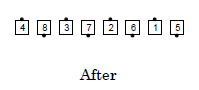
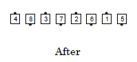

Same Position Rule
If two dancers are required to occupy the same position at the end of a call, and are facing in opposite directions from each other, they form a Right-Hand Mini-Wave. If an adjustment is necessary (since they are now two dancers side-by-side in a formation that expected one dancer), the adjustment is sideways, towards the outside of the group in which they were working.
Callers should not use a call that would result in two dancers who are facing the same direction, or at right angles, trying to occupy the same position.
Example: Circulate 1 1/2
 

© Copyright 1994, 2000-2017 by CALLERLAB Inc., The International Association of Square Dance Callers. Permission to reprint, republish, and create derivative works without royalty is hereby granted, provided this notice appears. Publication on the Internet of derivative works without royalty is hereby granted provided this notice appears. Permission to quote parts or all of this document without royalty is hereby granted, provided this notice is included. Information contained herein shall not be changed nor revised in any derivation or publication.